Documentation¶
Quick start¶
The core functionality of CHOMPACK is contained in two types of objects: the symbolic object and the cspmatrix (chordal sparse matrix) object. A symbolic object represents a symbolic factorization of a sparse symmetric matrix 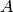, and it can be created as follows:
from cvxopt import spmatrix, amd
import chompack as cp
# generate sparse matrix
I = [0, 1, 3, 1, 5, 2, 6, 3, 4, 5, 4, 5, 6, 5, 6]
J = [0, 0, 0, 1, 1, 2, 2, 3, 3, 3, 4, 4, 4, 5, 6]
A = spmatrix(1.0, I, J, (7,7))
# compute symbolic factorization using AMD ordering
symb = cp.symbolic(A, p=amd.order)
The argument 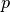 is a so-called elimination order, and it can be either an ordering routine or a permutation vector. In the above example we used the “approximate minimum degree” (AMD) ordering routine. Note that is a lower-triangular sparse matrix that represents a symmetric matrix; upper-triangular entries in are ignored in the symbolic factorization.
Now let’s inspect the sparsity pattern of A and its chordal embedding (i.e., the filled pattern):
>>> print(A)
[ 1.00e+00 0 0 0 0 0 0 ]
[ 1.00e+00 1.00e+00 0 0 0 0 0 ]
[ 0 0 1.00e+00 0 0 0 0 ]
[ 1.00e+00 0 0 1.00e+00 0 0 0 ]
[ 0 0 0 1.00e+00 1.00e+00 0 0 ]
[ 0 1.00e+00 0 1.00e+00 1.00e+00 1.00e+00 0 ]
[ 0 0 1.00e+00 0 1.00e+00 0 1.00e+00]
>>> print(symb.sparsity_pattern(reordered=False, symmetric=False))
[ 1.00e+00 0 0 0 0 0 0 ]
[ 1.00e+00 1.00e+00 0 0 0 0 0 ]
[ 0 0 1.00e+00 0 0 0 0 ]
[ 1.00e+00 0 0 1.00e+00 0 0 0 ]
[ 0 0 0 1.00e+00 1.00e+00 0 0 ]
[ 1.00e+00 1.00e+00 0 1.00e+00 1.00e+00 1.00e+00 0 ]
[ 0 0 1.00e+00 0 1.00e+00 0 1.00e+00]
The reordered pattern and its cliques can be inspected using the following commands:
>>> print(symb)
[X X ]
[X X X ]
[ X X X X ]
[ X X X X]
[ X X X]
[ X X X X X]
[ X X X X]
>>> print(symb.cliques())
[[0, 1], [1, 2], [2, 3, 5], [3, 5, 6], [4, 5, 6]]
Similarly, the clique tree, the supernodes, and the separator sets are:
>>> print(symb.parent())
[1, 2, 3, -1, 3]
>>> print(symb.supernodes())
[[0], [1], [2], [3, 5, 6], [4]]
>>> print(symb.separators())
[[1], [2], [3, 5], [], [5, 6]]
The cspmatrix object represents a chordal sparse matrix, and it contains lower-triangular numerical values as well as a reference to a symbolic factorization that defines the sparsity pattern. Given a symbolic object symb and a sparse matrix , we can create a cspmatrix as follows:
from cvxopt import spmatrix, amd, printing
import chompack as cp
printing.options['dformat'] = '%3.1f'
# generate sparse matrix and compute symbolic factorization
I = [0, 1, 3, 1, 5, 2, 6, 3, 4, 5, 4, 5, 6, 5, 6]
J = [0, 0, 0, 1, 1, 2, 2, 3, 3, 3, 4, 4, 4, 5, 6]
A = spmatrix([1.0*i for i in range(15)], I, J, (7,7))
symb = cp.symbolic(A, p=amd.order)
L = cp.cspmatrix(symb)
L += A
Now let us take a look at and 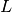:
>>> print(A)
[ 0.0 0 0 0 0 0 0 ]
[ 1.0 3.0 0 0 0 0 0 ]
[ 0 0 5.0 0 0 0 0 ]
[ 2.0 0 0 7.0 0 0 0 ]
[ 0 0 0 8.0 10.0 0 0 ]
[ 0 4.0 0 9.0 11.0 13.0 0 ]
[ 0 0 6.0 0 12.0 0 14.0]
>>> print(L)
[ 5.0 0 0 0 0 0 0 ]
[ 6.0 14.0 0 0 0 0 0 ]
[ 0 12.0 10.0 0 0 0 0 ]
[ 0 0 8.0 7.0 0 0 0 ]
[ 0 0 0 0 3.0 0 0 ]
[ 0 0 11.0 9.0 4.0 13.0 0 ]
[ 0 0 0 2.0 1.0 0.0 0.0]
Notice that is a reordered lower-triangular representation of . We can convert to an spmatrix using the spmatrix() method:
>>> print(L.spmatrix(reordered = False))
[ 0.0 0 0 0 0 0 0 ]
[ 1.0 3.0 0 0 0 0 0 ]
[ 0 0 5.0 0 0 0 0 ]
[ 2.0 0 0 7.0 0 0 0 ]
[ 0 0 0 8.0 10.0 0 0 ]
[ 0.0 4.0 0 9.0 11.0 13.0 0 ]
[ 0 0 6.0 0 12.0 0 14.0]
Notice that this returns an spmatrix with the same ordering as , i.e., the inverse permutation is applied to .
The following example illustrates how to use the Cholesky routine:
from cvxopt import spmatrix, amd, normal
from chompack import symbolic, cspmatrix, cholesky
# generate sparse matrix and compute symbolic factorization
I = [0, 1, 3, 1, 5, 2, 6, 3, 4, 5, 4, 5, 6, 5, 6]
J = [0, 0, 0, 1, 1, 2, 2, 3, 3, 3, 4, 4, 4, 5, 6]
A = spmatrix([0.1*(i+1) for i in range(15)], I, J, (7,7)) + spmatrix(10.0,range(7),range(7))
symb = symbolic(A, p=amd.order)
# create cspmatrix
L = cspmatrix(symb)
L += A
# compute numeric factorization
cholesky(L)
>>> print(L)
[ 3.26e+00 0 0 0 0 0 0 ]
[ 2.15e-01 3.38e+00 0 0 0 0 0 ]
[ 0 3.84e-01 3.31e+00 0 0 0 0 ]
[ 0 0 2.72e-01 3.28e+00 0 0 0 ]
[ 0 0 0 0 3.22e+00 0 0 ]
[ 0 0 3.63e-01 2.75e-01 1.55e-01 3.34e+00 0 ]
[ 0 0 0 9.16e-02 6.20e-02 -1.04e-02 3.18e+00]
from cvxopt import spmatrix, printing
printing.options['width'] = -1
import chompack as cp
# Define chordal sparse matrix
I = range(17)+[2,2,3,3,4,14,4,14,8,14,15,8,15,7,8,14,8,14,14,\
15,10,12,13,16,12,13,16,12,13,15,16,13,15,16,15,16,15,16,16]
J = range(17)+[0,1,1,2,2,2,3,3,4,4,4,5,5,6,6,6,7,7,8,\
8,9,9,9,9,10,10,10,11,11,11,11,12,12,12,13,13,14,14,15]
A = spmatrix(1.0,I,J,(17,17))
# Compute maximum cardinality search
p = cp.maxcardsearch(A)
>>> cp.peo(A,p)
True
>>> print(list(p))
[0, 9, 10, 11, 12, 13, 5, 6, 7, 1, 2, 3, 4, 8, 14, 15, 16]
>>> symb = cp.symbolic(A,p)
>>> print(symb)
[X X ]
[ X X X X X]
[ X X X X X]
[ X X X X X]
[ X X X X X X X]
[ X X X X X X X]
[ X X X ]
[ X X X X ]
[ X X X X ]
[ X X X ]
[X X X X X X ]
[ X X X X X ]
[ X X X X X X ]
[ X X X X X X X ]
[ X X X X X X X X X]
[ X X X X X X X X X]
[ X X X X X X X X]
>>> print(symb.fill)
(0, 0)
Symbolic factorization¶
- class chompack.symbolic(A, p=None, merge_function=None)¶
Symbolic factorization object.
Computes symbolic factorization of a square sparse matrix and creates a symbolic factorization object.
Parameters: - A – spmatrix
- p – permutation vector or ordering routine (optional)
- merge_function – routine that implements a merge heuristic (optional)
The optional argument p can be either a permutation vector or an ordering rutine that takes an spmatrix and returns a permutation vector.
The optional argument merge_function allows the user to merge supernodes in the elimination tree in a greedy manner; the argument must be a routine that takes the following four arguments and returns either True or False:
Parameters: - cp – clique order of the parent of clique 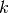
- ck – clique order of clique
- np – supernode order of the parent of supernode
- nk – supernode order of supernode
The clique k is merged with its parent if the return value is True.
- Nsn¶
Number of supernodes
- blkptr¶
Pointer array for block storage of chordal sparse matrix.
- chidx¶
Integer array with indices of child vertices in etree: chidx[chptr[k]:chptr[k+1]] are the indices of the children of supernode .
- chptr¶
Pointer array associated with chidx: chidx[chptr[k]:chptr[k+1]] are the indices of the children of supernode k.
- clique_number¶
The clique number (the order of the largest clique)
- cliques()¶
Returns a list of cliques (reordered pattern)
- fill¶
Tuple with number of lower-triangular fill edges: fill[0] is the fill due to symbolic factorization, and fill[1] is the fill due to supernodal amalgamation
- ip¶
Inverse permutation vector
- n¶
Number of nodes (matrix order)
- nnz¶
Returns the number of lower-triangular nonzeros.
- p¶
Permutation vector
- parent()¶
Returns a supernodal parent list: the i’th element is equal to -1 if supernode i is a root node in the clique forest, and otherwise the i’th element is the index of the parent of supernode i.
- relidx¶
The relative index array facilitates fast “extend-add” and “extract” operations in the supernodal-multifrontal algorithms. The relative indices associated with supernode is a list of indices 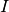 such that the frontal matrix 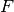 associated with the parent of node can be updated as F[I,I] += Uj. The relative indices are stored in an integer array relidx with an associated pointer array relptr.
- relptr¶
Pointer array assoicated with relidx.
- separators()¶
Returns a list of separator sets (reordered pattern)
- sncolptr¶
Pointer array associated with snrowidx.
- snode¶
Supernode array: supernode consists of nodes snode[snptr[k]:snptr[k+1]] where snptr is the supernode pointer array
- snpar¶
Supernode parent array: supernode is a root of the supernodal elimination tree if snpar[k] is equal to -1, and otherwise snpar[k] is the index of the parent of supernode in the supernodal elimination tree
- snpost¶
Supernode post-ordering
- snptr¶
Supernode pointer array: supernode is of order snpptr[k+1]-snptr[k] and supernode consists of nodes snode[snptr[k]:snptr[k+1]]
- snrowidx¶
Row indices associated with representative vertices: snrowidx[sncolptr[k]:sncolptr[k+1]] are the row indices in the column corresponding the the representative vertex of supernode , or equivalently, snrowidx[sncolptr[k]:sncolptr[k+1]] is the ‘th clique.
- sparsity_pattern(reordered=True, symmetric=True)¶
Returns a sparse matrix with the filled pattern. By default, the routine uses the reordered pattern, and the inverse permutation is applied if reordered is False.
Parameters: - reordered – boolean (default: True)
- symmetric – boolean (default: True)
- supernodes()¶
Returns a list of supernode sets (reordered pattern)
Chordal sparse matrices¶
- class chompack.cspmatrix(symb, blkval=None, factor=False)¶
Chordal sparse matrix object.
Parameters: - symb – symbolic object
- blkval – matrix with numerical values (optional)
- factor – boolean (default is False)
A cspmatrix object contains a reference to a symbolic factorization as well as an array with numerical values which are stored in a compressed block storage format which is a block variant of the compressed column storage format.
A = cspmatrix(symb) creates a new chordal sparse matrix object with a sparsity pattern defined by the symbolic factorization object symb. If the optional argument blkval specified, the cspmatrix object will use the blkval array for numerical values (and not a copy!), and otherwise the cspmatrix object is initialized with an all-zero array. The optional input factor determines whether or not the cspmatrix stores a factored matrix.
- copy()¶
Returns a new cspmatrix object with a reference to the same symbolic factorization, but with a copy of the array that stores the numerical values.
- diag(reordered=True)¶
Returns a vector with the diagonal elements of the matrix.
- is_factor¶
This property is equal to True if the cspmatrix represents a Cholesky factor, and otherwise it is equal to False.
Numerical computations¶
- chompack.cholesky(X)¶
Supernodal multifrontal Cholesky factorization:
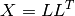
where is lower-triangular. On exit, the argument 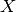 contains the Cholesky factor .
Parameters: X – cspmatrix
- chompack.llt(L)¶
Supernodal multifrontal Cholesky product:
where is lower-triangular. On exit, the argument L contains the product .
Parameters: L – cspmatrix (factor)
- chompack.projected_inverse(L)¶
Supernodal multifrontal projected inverse. The routine computes the projected inverse
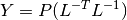
where is a Cholesky factor. On exit, the argument contains the projected inverse 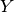.
Parameters: L – cspmatrix (factor)
- chompack.completion(X, factored_updates=True)¶
Supernodal multifrontal maximum determinant positive definite matrix completion. The routine computes the Cholesky factor of the inverse of the maximum determinant positive definite matrix completion of :, i.e.,
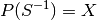
where 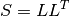. On exit, the argument X contains the lower-triangular Cholesky factor .
The optional argument factored_updates can be used to enable (if True) or disable (if False) updating of intermediate factorizations.
Parameters: - X – cspmatrix
- factored_updates – boolean
- chompack.hessian(L, Y, U, adj=False, inv=False, factored_updates=False)¶
Supernodal multifrontal Hessian mapping.
The mapping
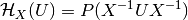
is the Hessian of the log-det barrier at a positive definite chordal matrix , applied to a symmetric chordal matrix 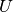. The Hessian operator can be factored as
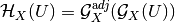
where the mappings on the right-hand side are adjoint mappings that map chordal symmetric matrices to chordal symmetric matrices.
This routine evaluates the mapping 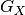 and its adjoint
 as well as the corresponding inverse
mappings. The inputs adj and inv control the action as
follows:
as well as the corresponding inverse
mappings. The inputs adj and inv control the action as
follows:Action adj inv 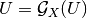 False False 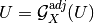 True False 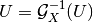 False True 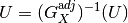 True True The input argument is the Cholesky factor of . The input argument is the projected inverse of . The input argument is either a chordal matrix (a cspmatrix) of a list of chordal matrices with the same sparsity pattern as and .
The optional argument factored_updates can be used to enable (if True) or disable (if False) updating of intermediate factorizations.
Parameters:
- chompack.dot(X, Y)¶
Computes trace product of X and Y.
- chompack.trmm(L, B, alpha=1.0, trans='N', nrhs=None, offsetB=0, ldB=None)¶
Multiplication with sparse triangular matrix. Computes
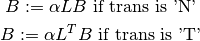
where is a cspmatrix factor.
Parameters: - L – cspmatrix factor
- B – matrix
- alpha – float (default: 1.0)
- trans – ‘N’ or ‘T’ (default: ‘N’)
- nrhs – number of right-hand sides (default: number of columns in 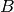)
- offsetB – integer (default: 0)
- ldB – leading dimension of (default: number of rows in )
- chompack.trsm(L, B, alpha=1.0, trans='N', nrhs=None, offsetB=0, ldB=None)¶
Solves a triangular system of equations with multiple righthand sides. Computes
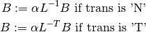
where is a cspmatrix factor.
Parameters: - L – cspmatrix factor
- B – matrix
- alpha – float (default: 1.0)
- trans – ‘N’ or ‘T’ (default: ‘N’)
- nrhs – number of right-hand sides (default: number of columns in )
- offsetB – integer (default: 0)
- ldB – leading dimension of (default: number of rows in )
Chordal conversion¶
The following example illustrates how to apply the chordal conversion technique to a sparse SDP.
# Given: tuple with cone LP problem data
# prob = (c,G,h,dims,A,b)
# Solve cone LP with CVXOPT's conelp() routine
sol = cvxopt.conelp(*prob)
# Apply chordal conversion to cone LP
probc, blk2sparse, symbs = chompack.convert_conelp(*prob)
# Solve converted problem with CVXOPT's conelp() routine
solc = cvxopt.solvers.conelp(*probc)
- chompack.convert_conelp(c, G, h, dims, A=None, b=None, **kwargs)¶
Applies the clique conversion method of Fukuda et al. to the positive semidefinite blocks of a cone LP.
Parameters: - c – matrix
- G – spmatrix
- h – matrix
- dims – dictionary
- A – spmatrix or matrix
- b – matrix
The following example illustrates how to convert a cone LP:
prob = (c,G,h,dims,A,b) probc, blk2sparse, symbs = convert_conelp(*prob)
The return value blk2sparse is a list of 4-tuples (blki,I,J,n) that each defines a mapping between the sparse matrix representation and the converted block-diagonal representation, and symbs is a list of symbolic factorizations corresponding to each of the semidefinite blocks in the original cone LP.
See also
M. Fukuda, M. Kojima, K. Murota, and K. Nakata, Exploiting Sparsity in Semidefinite Programming via Matrix Completion I: General Framework, SIAM Journal on Optimization, 11:3, 2001, pp. 647-674.
S. Kim, M. Kojima, M. Mevissen, and M. Yamashita, Exploiting Sparsity in Linear and Nonlinear Matrix Inequalities via Positive Semidefinite Matrix Completion, Mathematical Programming, 129:1, 2011, pp.. 33-68.
- chompack.convert_block(G, h, dim, **kwargs)¶
Applies the clique conversion method to a single positive semidefinite block of a cone linear program
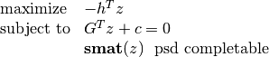
After conversion, the above problem is converted to a block-diagonal one
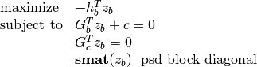
where 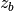 is a vector representation of a block-diagonal matrix. The constraint 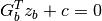 corresponds to the original constraint 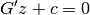, and the constraint 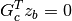 is a coupling constraint.
Parameters: - G – spmatrix
- h – matrix
- dim – integer
- merge_function – routine that implements a merge heuristic (optional)
- coupling – mode of conversion (optional)
- max_density – float (default: 0.4)
The following example illustrates how to apply the conversion method to a one-block SDP:
block = (G, h, dim) blockc, blk2sparse, symb = convert_block(*block)
The return value blk2sparse is a 4-tuple (blki,I,J,n) that defines a mapping between the sparse matrix representation and the converted block-diagonal representation. If blkvec represents a block-diagonal matrix, then
S = spmatrix(blkvec[blki], I, J)
maps blkvec into is a sparse matrix representation of the matrix. Similarly, a sparse matrix S can be converted to the block-diagonal matrix representation using the code
blkvec = matrix(0.0, (len(S),1), tc=S.typecode) blkvec[blki] = S.V
The optional argument max_density controls whether or not to perform conversion based on the aggregate sparsity of the block. Specifically, conversion is performed whenever the number of lower triangular nonzeros in the aggregate sparsity pattern is less than or equal to max_density*dim.
The optional argument coupling controls the introduction of equality constraints in the conversion. Possible values are full (default), sparse, sparse+tri, and any nonnegative integer. Full coupling results in a conversion in which all coupling constraints are kept, and hence the converted problem is equivalent to the original problem. Sparse coupling yeilds a conversion in which only the coupling constraints corresponding to nonzero entries in the aggregate sparsity pattern are kept, and sparse-plus-tridiagonal (sparse+tri) yeilds a conversion with tridiagonal coupling in addition to coupling constraints corresponding to nonzero entries in the aggregate sparsity pattern. Setting coupling to a nonnegative integer k yields a conversion with coupling constraints corresponding to entries in a band with half-bandwidth k.
See also
M. S. Andersen, A. Hansson, and L. Vandenberghe, Reduced-Complexity Semidefinite Relaxations of Optimal Power Flow Problems, IEEE Transactions on Power Systems, 2014.
Auxiliary routines¶
- chompack.maxcardsearch(A, ve=None)¶
Maximum cardinality search ordering of a sparse chordal matrix.
Returns the maximum cardinality search ordering of a symmetric chordal matrix . Only the lower triangular part of is accessed. The maximum cardinality search ordering is a perfect elimination ordering in the factorization 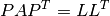. The optional argument ve is the index of the last vertex to be eliminated (the default value is n-1).
Parameters: - A – spmatrix
- ve – integer between 0 and A.size[0]-1 (optional)
- chompack.peo(A, p)¶
Checks whether an ordering is a perfect elmimination order.
Returns True if the permutation is a perfect elimination order for a Cholesky factorization . Only the lower triangular part of is accessed.
Parameters: - A – spmatrix
- p – matrix or list of length A.size[0]
- chompack.maxchord(A, ve=None)¶
Maximal chordal subgraph of sparsity graph.
Returns a lower triangular sparse matrix which is the projection of on a maximal chordal subgraph and a perfect elimination order . Only the lower triangular part of is accessed. The optional argument ve is the index of the last vertex to be eliminated (the default value is n-1). If is chordal, then the matrix returned is equal to .
Parameters: - A – spmatrix
- ve – integer between 0 and A.size[0]-1 (optional)
See also
P. M. Dearing, D. R. Shier, D. D. Warner, Maximal chordal subgraphs, Discrete Applied Mathematics, 20:3, 1988, pp. 181-190.
- chompack.merge_size_fill(tsize=8, tfill=8)¶
Simple heuristic for supernodal amalgamation (clique merging).
Returns a function that returns True if either (i) supernode k and supernode par(k) are both of size at most tsize, or (ii), merging supernodes par[k] and k induces at most tfill nonzeros in the lower triangular part of the sparsity pattern.
Parameters: - tsize – nonnegative integer; threshold for merging based on supernode sizes
- tfill – nonnegative integer; threshold for merging based on induced fill
- chompack.tril(A)¶
Returns the lower triangular part of .
- chompack.triu(A)¶
Returns the upper triangular part of .
- chompack.perm(A, p)¶
Symmetric permutation of a symmetric sparse matrix.
Parameters: - A – spmatrix
- p – matrix or list of length A.size[0]
- chompack.symmetrize(A)¶
Returns a symmetric matrix from a sparse square matrix . Only the lower triangular entries of are accessed.